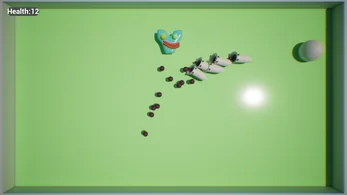
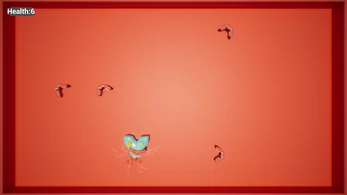
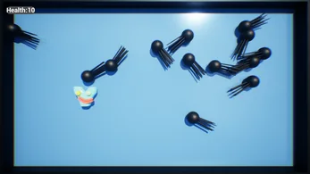

Games & mechanics
MMORP 3D
The original’s bullet-hell chaos, rebuilt in Unreal Engine 5.
Overview
MMORP 3D began as a remake of the original MMORP with path tracing and Blender-made assets. It grew into a three-dimensional game with randomized encounters, new enemies, and new mechanics.
The game includes classic and infinite modes. The creator’s notes list 781 possible enemy combinations, with music contributed by John Harper Tarleton.
How to play
Move the mouse to guide MMORP, dodge enemies, and survive. Classic mode revisits enemies from the original, while infinite mode introduces threats such as Toother.
Creatures
Returning enemies include Squelch, Plopper, Threnemy, Helper, and Chomper. Newer creatures include Gulper and Toother.
Gallery



KEEP EXPLORING